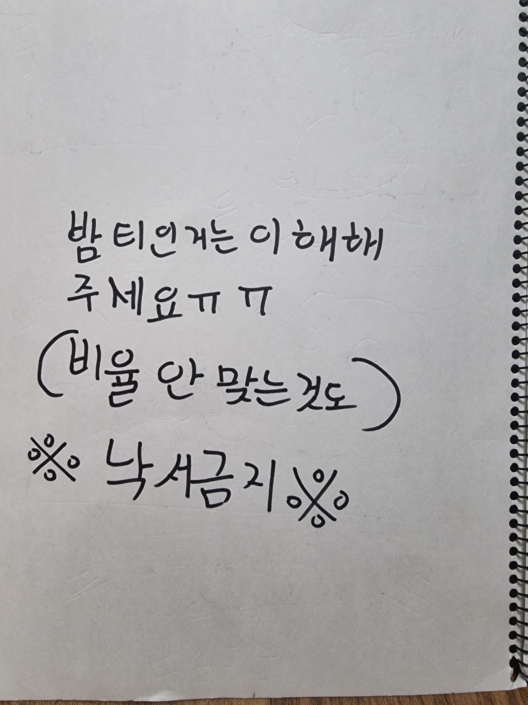

어린이 작가 온라인 서점
아이의 원본을 지키는
AI 출판 보조 서점
AI는 편집과 검토 초안을 제안하고, 사람은 공개 여부를 결정합니다.
EPISODES
한글 손글씨 인식 정확도가 낮아 잘못된 영문 결과를 숨겼습니다. 원본을 보며 직접 입력해 주세요.
원본과 비교해 틀린 글자를 수정해 주세요.
6장 · 7~8분 · 실제 구현 기준
선택한 자료는 이 기기에만 저장됩니다.
05_과제제안서.md — 최초 제안PROJECT_NOTES.md — 최종 구현·검증 기록02_과제구현.md — 시스템·저장 구조06_강의노트.md — AI·사람 검토·아동 안전 근거
COMMENTS
응원 댓글